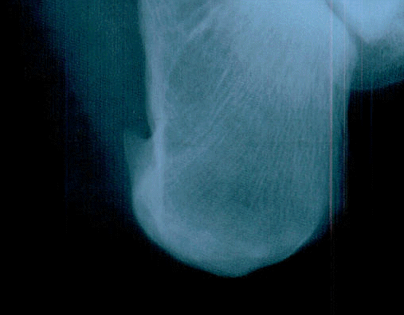

|
My left foot hurts.
It all started a few months ago. At first it felt like I had stepped on a rock. Hard. Initially I blamed my shoes. I had one pair of work shoes that had started to wear. The outside of the left heel was heavily worn. Also my sneakers were old and in poor shape. I thought that I was having some form of cramp in my foot. I got new shoes and started drinking more water. Still the pain persisted. Reluctantly I considered that I might have something wrong. My next birthday will have a zero in it. And a four. I guess some of the parts are wearing out. Sigh. Last week I went to the doctor and had the nifty picture below taken. I have a heel spur. The good news is that it is hook shaped. I gather the pointy ones are really painful.  Luckily I don't face surgery to correct this problem. Several weeks of ultra-sound treatments should reduce it. Since it is caused by some additional pressure on that foot I will be wearing better (newer) hard soled shoes to protect the area. I've also got some really soft pads to put in my shoes. |